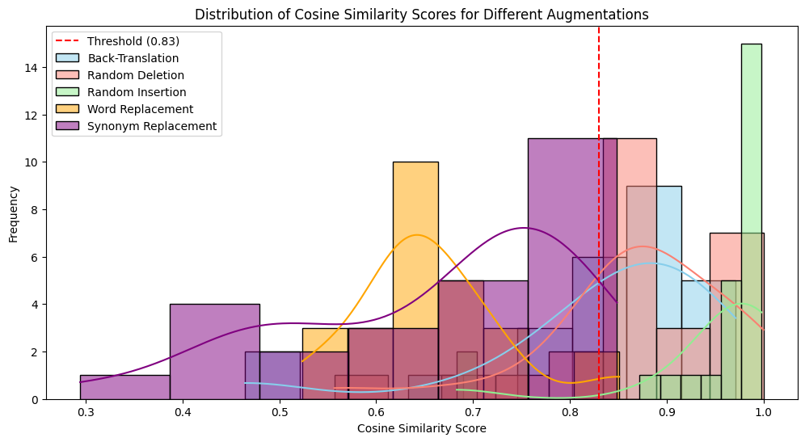
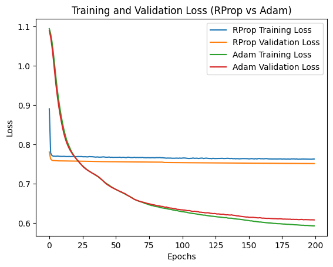

MIT 805 · Big data engineering
Amazon Reviews Analytics


Analysed 7.23 million reviews with PySpark; Part 2 ranked 17,765 sufficiently reviewed products by customer-experience risk and validated RDD/DataFrame aggregation.
Read case study →Data science · Software engineering · Mathematics
Aspiring Data Scientist and Software Engineer with a background in Mathematical Sciences, Computer Science, machine learning, and low-resource NLP.
About
I grew up in Gandlanani Khani, Giyani, with limited access to computers and the internet. That experience made me a resourceful learner and taught me to see constraints as invitations to think differently.
Today, I combine mathematical thinking, computer science, and an emerging data-science toolkit to investigate difficult problems and build useful, understandable solutions. I am especially interested in machine learning, natural language processing, and technology that serves underrepresented communities.
Selected projects
A selection of research, data, mapping, and algorithmic projects. Each one starts with a practical question and turns it into something people can use.
MIT 805 · Big data engineering
Analysed 7.23 million reviews with PySpark; Part 2 ranked 17,765 sufficiently reviewed products by customer-experience risk and validated RDD/DataFrame aggregation.
Read case study →COS 802 · Predictive modelling

Compared regression pipelines on Ames Housing. Engineered-feature XGBoost achieved test RMSE $25,354.31 and R² 0.8999 on 586 held-out properties.
Read case study →Computer vision · COS 801 / RQ7.1


Reduced EfficientNet-B0 storage by 69.6% with INT8 quantisation, retaining 98.350% mean test accuracy across three seeds on PlantVillage. Compared pruning, quantisation and knowledge distillation.
Read case study →COS 700 · Research report · English–Xitsonga
Investigated five augmentation techniques for English–Xitsonga using the Vuk’uzenzele aligned corpus. Compared BLEU and METEOR, semantic-similarity filtering (0.84), and translation-consistency classifiers; DistilBERT achieved 86.26% reported classification accuracy, not translation accuracy.
Read research case study → · Read PDF → · Colab source code ↗COS 781 · Data Mining report · English–Xitsonga


Explored 3,748 aligned English–Xitsonga sentence pairs using text preprocessing, TF-IDF, K-means, PCA and t-SNE. Evaluated augmentation similarity using a 0.83 pseudo-labelling threshold and compared exploratory classifiers. Separate report, shared underlying data.
Read case study → · Read COS 781 report ↗COS 711 · Artificial Intelligence II


Compared RProp, Adam, and a hybrid optimiser across network and training configurations, achieving 80.29% accuracy on the held-out test set.
Read case study →Geospatial · Delivery pricing
A location-based ordering tool that maps the road journey from Tintswalo’s Farm to the customer and estimates the chicken-delivery fee using clear base and per-kilometre pricing.
Calculate a delivery fareAlgorithms · Visualisation
An interactive exploration of prime numbers using the Sieve of Eratosthenes, turning an abstract algorithm into a clear visual experience.
Launch projectConstraint solving · Algorithms
A browser-based solver that applies backtracking to evaluate constraints and complete user-provided Sudoku puzzles.
Launch projectInteractive mathematics
API integration
Research & academic work
My academic work spans neural networks, software architecture, responsible health technology, and low-resource language modelling.
Compared Rprop, Adam, and a hybrid approach; used grid search and statistical testing to improve classification performance and generalisation.
Neural networks
Derived update rules for a custom neural network with unique activation functions, a penalty-based loss, and distinct bias treatment.
Machine learning theory
Proposed a secure, interoperable EHR approach focused on patient care, POPIA-aligned privacy, and phased implementation.
Responsible systems
Reimagined a legacy social platform through requirements analysis and an architecture combining microservices, three-tier, and MVC patterns.
Software architecture
Technical competencies
Big Data Science · Data mining and analysis · Artificial intelligence technologies · Natural language processing (NLP) · Machine learning models and evaluation · Mathematics fundamentals · Data structures and algorithms
C++ · Java · Python · R · SQL · Visual Basic · Assembly · PHP · HTML · CSS · JavaScript · Software development · Software architecture and design patterns · Agile and Scrum methodologies
Advanced Excel and data models · Power BI · Tableau · Presentation design and delivery · Research methodologies and academic writing · Analytical and critical thinking
Debt collection strategies · Compliance adherence · Negotiation tactics · Client engagement · Debt portfolio analysis
Education
My studies connect mathematical reasoning, computer science, research, and modern data-science practice.
University of Pretoria
Advanced coursework in big data science, machine and statistical learning, data platforms, mathematical optimisation, data management, information ethics, and research methods, culminating in an applied big-data project.
University of Pretoria
Completed 120 credits of advanced computer-science study, including an independent supervised research project and technical report, supported by coursework spanning software engineering, architecture, artificial intelligence, data mining, and advanced computing topics.
University of Johannesburg
Built a rigorous foundation across mathematics, statistics, applied mathematical reasoning, and computer science, with progressive work in programming, algorithms, quantitative modelling, and analytical problem-solving.
Certificates
Each credential opens on its official verification page, so its authenticity can be checked directly with the issuing institution.
Coursera
Credential: N6B3CZP5T4YT
View verified credentialCoursera
Credential: YSC4DFRBH7ZF
View verified credentialUniversity of Johannesburg
Document ID: 01769213-01-A4YD
Open credential portalUniversity of Michigan · Coursera
Credential: ULZ9H5T7
View verified credentialContact
I am open to data-science opportunities, research collaborations, and meaningful software projects.
Start a conversation